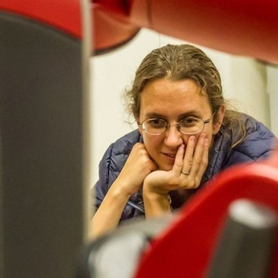

Session 1
Aug 10 | 8:10 AM EST
Intro and Logistics
8:10 AM EST
Lightning Talks
8:20 AM EST | 35 min
Toward Robot Teleoperation with Virtual Reality: Remote Scene Exploration and Object Grasping
Bukeikhan Omarali, Kaspar Althoefer, Maurizio Valle and Ildar Farkhatdinov.
Robot Teleoperation through Virtual Reality Interfaces: Comparing Effects of Fixed and Moving Cameras
Mehdi Sobhani, Mauel Giuliani, Alex Smith and Anthony Pipe.
Heuristic Evaluation Adaptation to Virtual Reality Systems for Visualisation of Robot Sensor Data in Nuclear Decommissioning
Paul Bremner, Manuel Giuliani, Tony Pipe and Alan Winfield.
Towards an Immersive User Interface for Waypoint Navigation of Mobile Robots
Gregory Baker, Tom Bridgwater, Paul Bremner and Manuel Giuliani.
Visuo-tactile AR for Enhanced Safety Awareness in Human-Robot Interaction
Matti Krüger, Martin Weigel and Michael Gienger.
System for robotic manipulator programming in Mixed Reality
Mikhail Ostanin, Stanislav Mikhel, Aleksei Evlampev, Valeria Skvortsova and Alexandr Klimchik.
Investigation of the Human-Robot Interaction in Affective Robotics Using HRI with apparent differences in VR/AR
Taishi Sawabe, Suguru Honda, Yuichiro Fujimoto, Masayuki Kanbara and Hirokazu Kato.
Poster Session 1/2
9:00 AM EST | 50 min
Papers with lighting talks in the preceding session will be participating in this poster session.
Break
10 min
Keynote 1/2
10:00 AM EST | 30 min
Catherine Diaz
Microsoft Mixed Reality
Home
Breakout Session
10:30 AM EST | 30 min
Interactive Q&A session with Catherine, the organizers, and the audience.
Session 2
Aug 10 | 1:00 PM EST
Intro and Logistics
1:00 PM EST
Keynote 2/2
1:10 PM EST | 60 min

Stefanie Tellex
Brown University
Home
H2R
Breakout Session 2/2
2:10 PM EST | 30 min
Interactive Q&A session with Stefanie, the organizers, and the audience.
Break
10 min
Lightning Talks
2:50 PM EST | 35 min
R.A.I.N. -- A Vision Calibration Tool using Augmented Reality
Andre Cleaver, Elaine Short and Jivko Sinapov.
Implementing Virtual Reality for Teleoperation of a Humanoid Robot
Jordan Allspaw, Gregory LeMasurier and Holly Yanco.
Tele-robotics via An Efficient Immersive Virtual Reality Architecture
Nasif Zaman, Alireza Tavakkoli and Christos Papachristos.
Exploring Mixed Reality Robot Communication Under Different types of Mental Workload
Nhan Tran, Kai Mizuno, Trevor Grant, Thao Phung, Leanne Hirshfield and Tom Williams.
Wait, I'm tagged?! Toward AR Project Aquaticus
Nicholas Franck, Christa Chewar, Michael Novitzky and Christopher Korpela.
Tradeoffs Between Effectiveness and Social Perception When Using Mixed Reality to Supplement Gesturally Limited Robots
Jared Hamilton, Nhan Tran and Tom Williams.
Exploring Interaction Design Considerations for Trustworthy Language-Capable Robotic Wheelchairs in Virtual Reality
Nicholas Woodward, Teresa Nguyen, Lixiao Zhu, Carter Fowler, Taewoo Kim, Stacia Near, Stephen Thoemmes and Tom Williams.
Poster Session 2/2
3:30 PM EST | 60 min
Papers with lighting talks in the preceding session will be participating in this poster session.